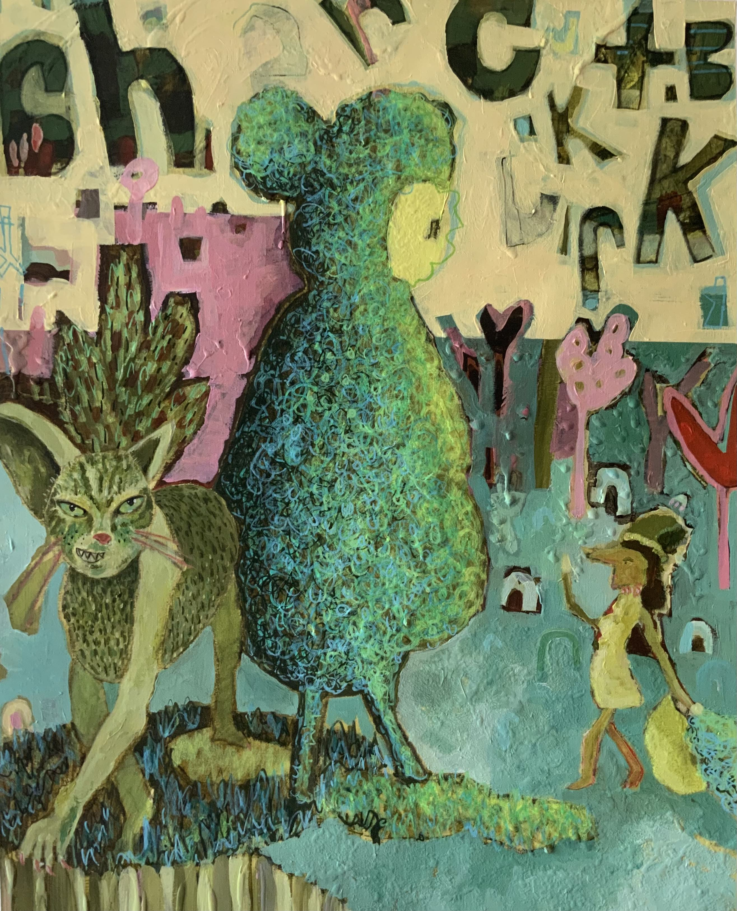

Oniyonkid works in paint, clay and usual formate, with a sense of colour that is rich, unexpected with a comfortable amount of unbalance. Her focus is on exploring how we utilise the design process in parallel to when we express unconditional creativity with the goal of enriching ones well being.
/
Kiri Scott and Dunedin artist known as Oniyonkid, she was born in the North Island of New Zealand and Trained at Enmore design Centre, Sydney Australia. Oniyonkid draws her inspiration from day-to-day objects, personal situations and her love for imagination. Her work holds a playful and energetic fullness that leaves the viewer feeling a sense of abundance.

Awards and exhibitions 2020 - finalist in Parkins drawing price Wellington 2020 - QT contemporary art - group show 2019 - contemporary artwork Queenstown art Centre art award 2019 - finalist in the golds auto awards Central stories Museum and art gallery Alexandra 2019 - QT contemporary Temporally Temporal - group show kid in town - Group show